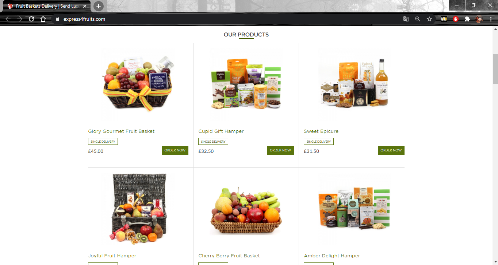
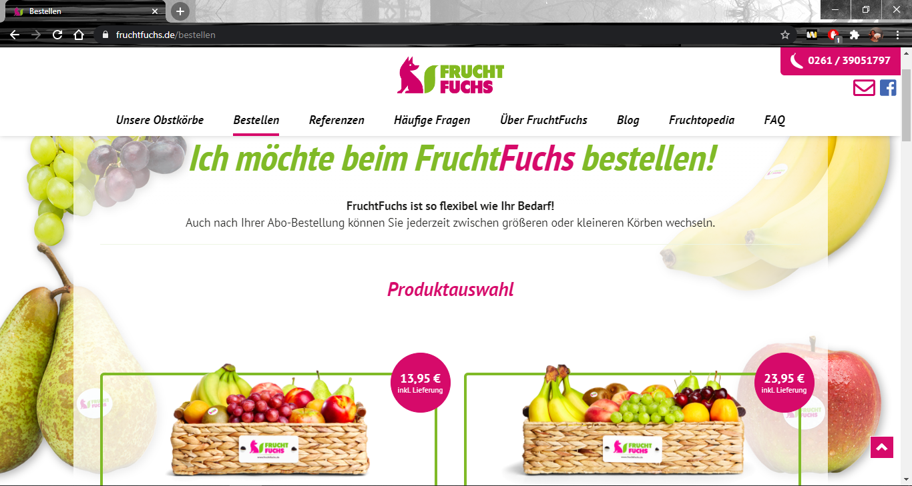
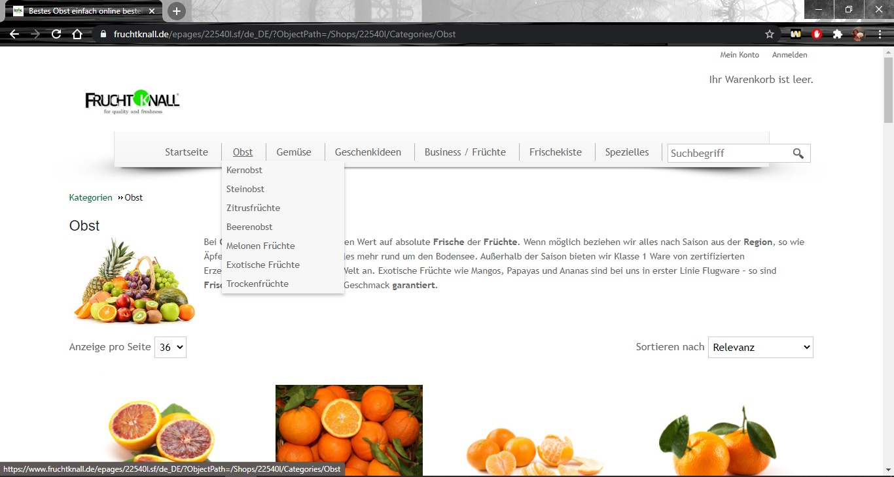
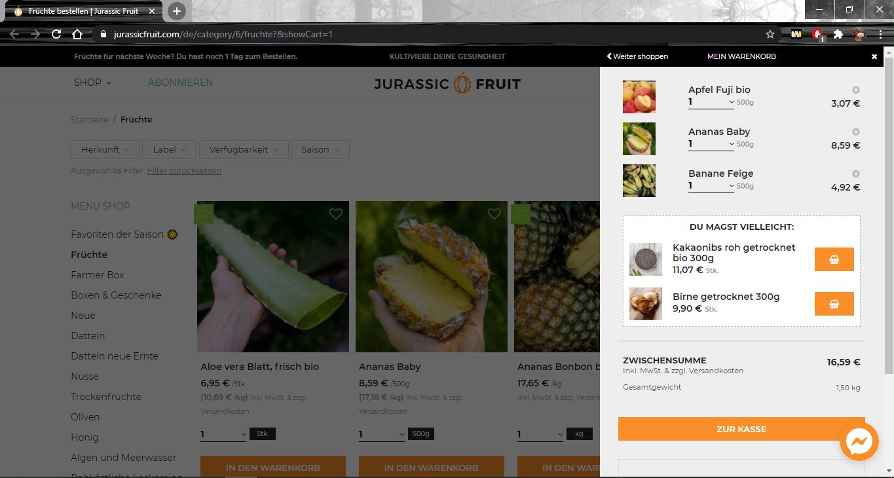
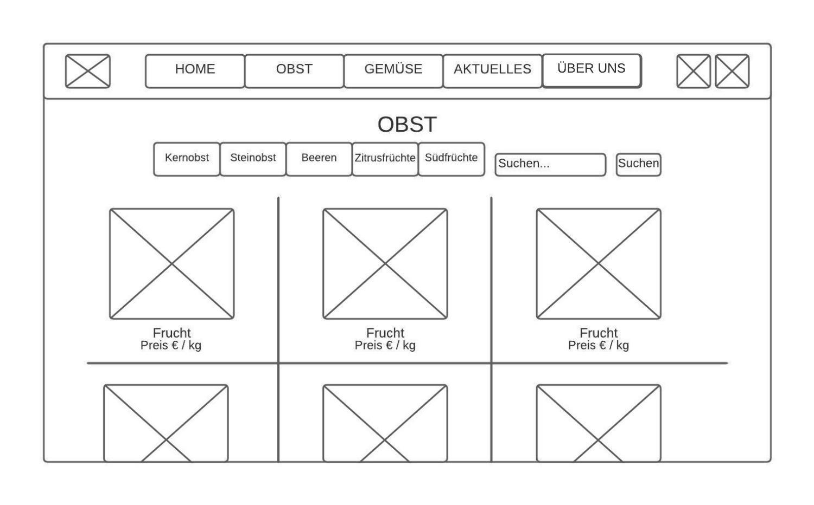
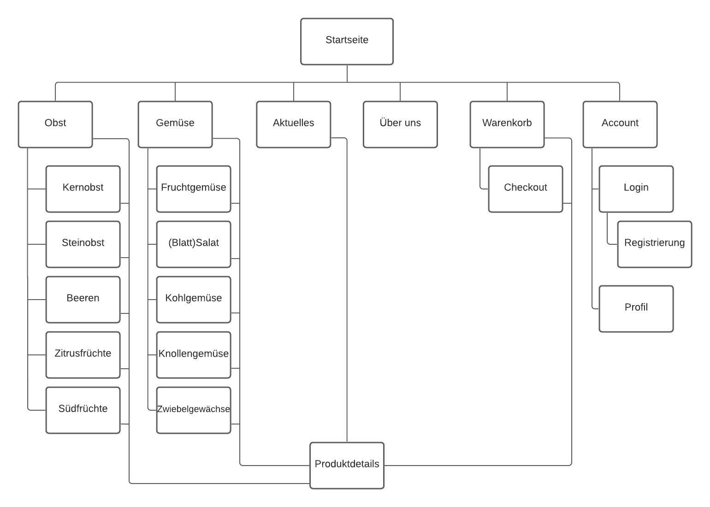
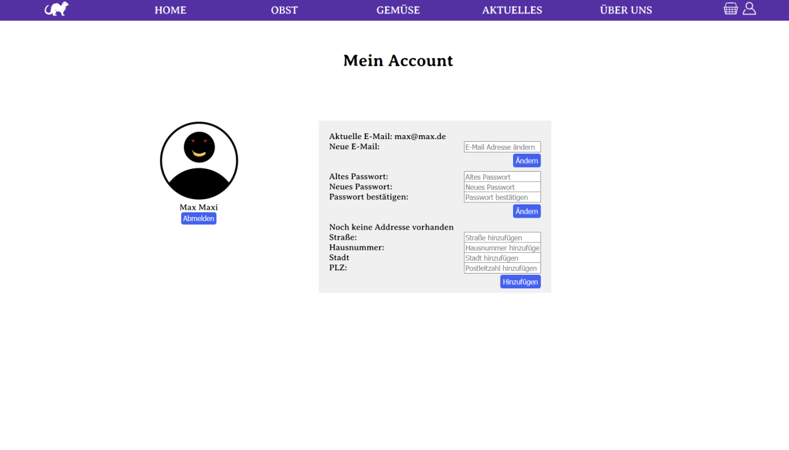

Dokumentation FrFrFrFr
>>>Link zum Git Repository<<<Freddie Fauligs Fitnessstudio, Freddie Fauligs Fitness Farm, läuft nicht mehr so gut, wie es sollte. Die Covid19-Pandemie hat ihn viele Kunden gekostet und jegliche Lockdowns führten sogar zur zeitweisen Schließung der Fitness Farm.
Da muss ein neuer Plan ran, dachte sich Freddie Faulig. Aber womit kann man die Gesundheitsfreaks von LazyTown noch begeistern? Da kam ihm die Idee! Er will Obst und Gemüse verkaufen. Aber selbst einkaufen zu gehen ist zurzeit eher lästig, wer weiß, wie viel Kundschaft ihm da wieder entrinnt. Und genau deshalb muss es ein Onlineshop werden. Dafür muss niemand nach draußen gehen, ewig Zeit in Warteschlangen verschwenden und sich womöglich in engen Gängen bei hustenden Maskenfalschträgern anstecken. Grandios.
Nun muss eine ansprechende Website her, auf der sich jeder potenzielle Kunde, möglicherweise auch weit über die Grenzen LazyTowns hinaus, frische Lebensmittel bestellen kann. Übersichtlich muss sie sein, eine gute Auswahl bieten und gleichzeitig das Auge nicht überfordern. Somit kann sich dort jeder ganz einfach frisches Obst und Gemüse aussuchen, kaufen und liefern lassen und das ohne das Haus verlassen zu müssen.
Und wie soll die Website heißen? Freddie Fauligs… frische Früchte? Nein, das ist zu generisch. Freddie Fauligs… Freche Früchte? Das klingt zu sehr nach faulen Früchten. Freddie schaut sich grübelnd um und entdeckt sein Haustier – das Frettchen Freddie. Ich hab’s, denkt er. Damit geben wir der Seite gleich ein süßes Maskottchen. Sie sollte von nun an heißen: Freddie Frettchens Freche Früchte. Willkommen!
Design: Layout, Farben und Schriften
Bei dem Design der Website haben wir uns erst einmal für einen weißen Hintergrund entschieden, da die Produkte, die angeboten werden, sehr bunt sind und wir unschöne Farbkontraste vermeiden wollten. Die Ursprüngliche Idee war es, Farbakzente nach den Farben Freddie Fauligs, weinrot und dunkellila, einzusetzen, was allerdings recht altmodisch aussah. Nun ist die Navigationsleiste nach mehreren Überlegungen in einem dunklen, blasseren Lila gestaltet, Hovereffekte in blau und Farbakzente in grün und einem auffälligen pink.
Für das Layout der Website haben wir uns Inspiration von den vorher aufgelisteten Websites eingeholt. Somit haben wir unsere Navigationsleiste in Home, Obst, Gemüse, Aktuelles und Kontakt eingeteilt. In Obst- und Gemüseunterseiten findet man den Shop, dessen Produkte in einem dreispaltigen Gridlayout aufgelistet sind. Auf diese Weise können recht viele Produkte, aber auch nicht zu viele auf einmal angesehen werden.
Oben rechts in der Navigationsleiste sind zwei kleine Icons, ein Menschlein und ein Körbchen, die jeweils auf das Nutzerprofil und den Warenkorb weiterleiten.
Wir wollten eine Schriftart verwenden, die etwas verspielt aussieht, da es der Name „Freddie Frettchens Freche Früchte“ so anbietet. Allerdings wollten wir auch nicht zu kindlich sein und es trotz der Verspieltheit seriös aussehen lassen. Aufgrund dessen haben wir uns für die Schriftart „Averia Serif Libre“ entschieden, da sie einen guten Mix aus Frohsinn und Zuverlässigkeit darstellt.
Weiterhin haben wir, passend zum Maskotten, ein kleines Frettchenlogo kreiert, das ebenso für Charakter der Seite, wie einen gewissen Wiedererkennungswert sorgen soll.
Unsere Inspirationen
https://www.express4fruits.com/
Das Layout dieser Seite war optisch sehr ansprechend und übersichtlich. Außerdem empfanden wir es als gute Idee, dass beim Hovern über die Navigation immer erst ein Sekündchen vergangen ist, bevor sich die Untermenüs öffneten.

https://www.fruchtfuchs.de/
Diese Seite hat uns vor allem in Designaspekten geholfen. Durch sie kamen wir einerseits auf ein Tierchen als Wiedererkennungswert, andererseits auf ein gewisses Farbschema. Bei fruchtfuchs.de sind es Grün und Magenta, die immer wieder als Farbakzente auftauchen, was grafisch sehr ansprechend ist. Weiterhin mochten wir die fixierte Navigationsleiste auf der Website.

https://www.fruchtknall.de/Obst/bestellen
Auf dieser Seite kann sehr gut und einfach nach Kategorien sortiert werden, was wir uns ebenfalls zum Ziel gesetzt haben. Weiterhin gefällt uns das Bewertungssystem und die eher minimalistisch gehaltene Navigationsleiste.

https://www.jurassicfruit.com/de/category/6/fruchte
Diese Website bietet eine extrem große Auswahl an verschiedenen Früchten, was einerseits wünschenswert, andererseits aber leider etwas überfordernd ist. Die Seite hatte ein sehr angenehmes Design und auch die Entscheidung, den Einkaufswagen als pop-up zu gestalten, hat uns sehr angesprochen.

Wireframes unserer Website
Desktop Wireframe

Mobile Wireframe

Sitemap
Unsere Seiten und ihre Funktionalitäten
1. Home

Startseite;
Navigationsleiste, um auf Unterseiten zu gelangen (auch bei anderen Seiten);
„Home“-Button und Logo führen zurück auf diese Seite;
Obst- und Gemüsebilder sind klickbar, damit gelangt man jeweils auf die Unterseiten Obst oder Gemüse;
Footer am Boden der Seite (auch bei anderen Seiten)
2. Obst

„Obst“-Button führt auf diese Seite;
Alle Produkte der Kategorie Obst aufgelistet;
Nach Unterkategorien suchen: über Buttons oder über Eingabe in Suchleiste;
Auf Frucht klicken, um auf Produktdetails zu gelangen
3. Obst Suchfunktion

„Beeren“-Button führt auf diese Seite;
Produkte der Kategorie Obst nach Unterkategorie Beeren sortiert
4. Gemüse

„Gemüse“-Button führt auf diese Seite;
Alle Produkte der Kategorie Gemüse aufgelistet;
Nach Unterkategorien suchen: über Buttons oder über Eingabe in Suchleiste;
Auf Frucht klicken, um auf Produktdetails zu gelangen
5. Gemüse Suchfunktion

Suchleiste führt auf diese Seite;
Demonstriert Suchfunktion: Suchen nach Kohlgemüse, das den Buchstaben B enthält
6. Produktdetails

Klicken auf ein Produkt führt auf diese Seite;
Produktdetails wie Bild, Beschreibung, Preis und Lagerbestand des Produktes aufgelistet;
Auswahl, wie viel man von dem Produkt kaufen möchte;
Einkaufswagen-Symbol:
Wenn eingeloggt: Produkt zum Warenkorb hinzufügen,
Wenn nicht: führt zu Login-Seite;
Zurück zum Shop gelangen mittels Zurück-Button
7. Aktuelles

„Aktuelles“-Button führt auf diese Seite;
Saisonales Obst und Gemüse aufgelistet;
Namen und Bilder der aufgelisteten Produkte klickbar, führen auf deren Produktdetails
8. Über uns

„Über uns“-Button führt auf diese Seite;
Zeigt einen Text und ein Bild vom Chef des Shops – Freddie Faulig!
9. Warenkorb

Warenkorb-Icon führt zu dem Pop-Over;
Listet alle Produkte auf, die man dem Warenkorb hinzugefügt hat;
Man kann Produkte mittels „entfernen“-Button aus dem Warenkorb löschen;
Zeigt den zusammengerechneten Preis an;
„Zur Kasse“-Button führt zum Checkout
10. Checkout

„Zur Kasse“-Button führt zu dieser Seite;
Listet noch einmal die Produkte im Warenkorb auf
Produkte können über den entfernen-Button herausgelöscht werden;
Zeigt des Gesamtpreis;
Mittels „Kaufen“-Button kann die Bestellung abgeschlossen werden
11. Login

Account-Icon führt zu dieser Seite, wenn man nicht angemeldet ist;
Eingabe von E-Mail-Adresse und Passwort möglich;
„Angemeldet bleiben?“-Checkbox, falls man angemeldet bleiben möchte;
„Login“-Button führt zum Anmelden oder zu einer Fehlermeldung bei falschen Eingaben;
„Registrierung“-Button führt zur Registrierung
12. Registrierung

„Registrierung“-Button führt auf diese Seite;
Eingabe des Vornamens, Nachnamens, der E-Mail, des Passworts und der Wiederholung des Passworts;
„Registrieren“-Button führt bei korrekten Eingaben zu einer Registrierung des Accounts, bei Unvollständigkeit oder Fehlern zu einer Fehlermeldung;
„Zurück zum Login“-Button führt zur Login-Seite
13. Profil

Account-Icon führt zu dieser Seite, wenn man angemeldet ist;
Mittels „Abmelden“-Button kann man sich abmelden;
Aktuelle Persönlichen Daten werden angezeigt;
Persönliche Daten ändern: neue Angaben in Felder schreiben und mit „Ändern“-Button bestätigen
14. Admin-Profil

Account-Icon führt zu dieser Seite, wenn man angemeldet ist und Adminrolle hat;
Alle Funktionen des Customer-Profils, aber zusätzlich: Formular zum Hinzufügen eines Produktes;
Eingaben in Felder tätigen, Kategorie per Drop-Down-Menüs auswählen und Bild hochladen;
Bestätigung der Eingaben durch „Produkt hinzufügen“-Button